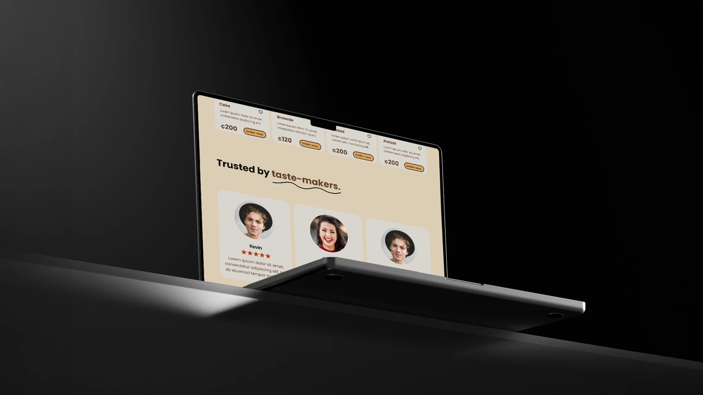
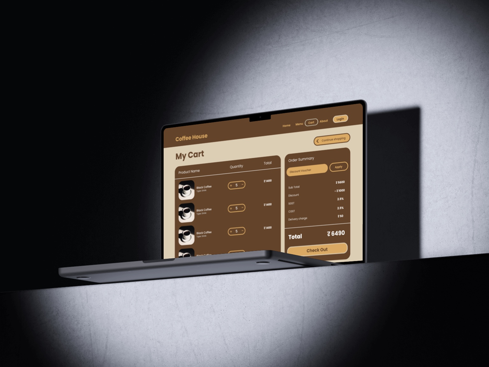

003 / Case StudyCOFFEE
COFFEE
HOUSE
A desktop landing page concept built around warm branding, relaxed discovery, and low-commitment product engagement.
Download PDF
CONTEXT
Coffee House is a desktop e-commerce concept focused on product discovery and user engagement instead of forcing immediate checkout decisions.
PROBLEM
Many e-commerce interfaces push conversion too early with add-to-cart pressure, pop-ups, and checkout prompts. For users who are still exploring, this creates decision fatigue and makes browsing feel rushed.
GOAL
- Design a clean and visually balanced desktop interface.
- Improve browsing and product discovery.
- Use a low-commitment Like interaction to support exploration.
- Maintain consistency across screens.
PROCESS
- Observed patterns from e-commerce and content-driven platforms.
- Separated exploration from checkout commitment.
- Built wireframes for homepage, menu, cart, login, checkout, and about pages.
- Created high-fidelity desktop screens with a warm coffee-inspired identity.
OUTCOME
The final design creates a calmer browsing experience. The Like-based interaction lets users express interest without interrupting their flow, supporting engagement before conversion.
VISUALS

